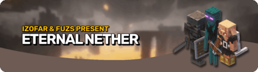
[EN] 永恒下界 Eternal Nether
共 46 个条目 · eternalnether
版本: 21.1.3 · 来源: EternalNether-v21.1.3-1.21.1-NeoForge.jar
New structures, mobs, and many Nether adventures await! A continuation of Bygone Nether by Izofar.
MC百科中文名: [EN] 永恒下界
MC百科页面: https://www.mcmod.cn/class/19570.html（[EN] 永恒下界 (EternalNether)）
官方介绍 （Modrinth · 联网获取）
🌑 SOULIFIED ETERNAL NETHER
Dark Souls difficulty addon for Eternal Nether mod.
⚠️ REQUIREMENTS
All required: 1. EternalNether Mod 2. Soulified Vanilla (datapack or mod) 3. **Soulified EnternalNether (datapack or mod)
🔥 WHAT IT DOES
8 Eternal Nether Mobs Enhanced:
All mobs have Fire Resistance - Immune to lava and fire damage in their native Nether environment.
📥 INSTALLATION
- Install Eternal Nether mod in mods folder
- Install Soulified Vanilla in datapacks or mods folder
- Place
soulified_eternalnetherin datapacks or mods folder - Run
/reloadin-game
🐛 TROUBLESHOOTING
Entities not enhanced? Verify Eternal Nether mod is installed "Unknown entity type" errors? Mod is missing - install Eternal Nether Works on servers? Yes, install mod + both datapacks or mods
Burn in the eternal flames! 💀🔥
资料来源：Soulified EternalNether（自动匹配，仅供参考）
物品与方块
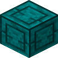
錾制诡异下界砖eternalnether:chiseled_warped_nether_bricks · 方块
 錾制凋零黑石
錾制凋零黑石eternalnether:chiseled_withered_blackstone · 方块
 黑石圆石
黑石圆石eternalnether:cobbled_blackstone · 方块
 凋零蛮兵刷怪蛋
凋零蛮兵刷怪蛋eternalnether:corpor_spawn_egg · 物品
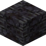
裂纹凋零黑石eternalnether:cracked_withered_blackstone · 方块
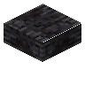
裂纹凋零黑石台阶eternalnether:cracked_withered_blackstone_slab · 方块
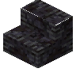
裂纹凋零黑石楼梯eternalnether:cracked_withered_blackstone_stairs · 方块?Cracked Withered Blackstone Vertical Slab
eternalnether:cracked_withered_blackstone_vertical_slab · 方块
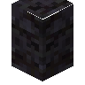
Cracked Withered Blackstone Walleternalnether:cracked_withered_blackstone_wall · 方块?Crushed Withered Debris
eternalnether:crushed_withered_debris · 物品
 Cutlass
Cutlasseternalnether:cutlass · 物品?镀金下界合金靴子
eternalnether:gilded_netherite_boots · 物品?镀金下界合金胸甲
eternalnether:gilded_netherite_chestplate · 物品?镀金下界合金头盔
eternalnether:gilded_netherite_helmet · 物品?镀金下界合金护腿
eternalnether:gilded_netherite_leggings · 物品Gilded Netherite Shield
eternalnether:gilded_netherite_shield · 物品
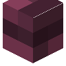
Netherite Belleternalnether:netherite_bell · 方块?Netherite Scrap Ingot
eternalnether:netherite_scrap_ingot · 物品?Netherite Scrap Nugget
eternalnether:netherite_scrap_nugget · 物品
猪灵猎人刷怪蛋eternalnether:piglin_hunter_spawn_egg · 物品
猪灵囚犯刷怪蛋eternalnether:piglin_prisoner_spawn_egg · 物品
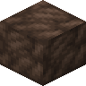
灵魂石eternalnether:soul_stone · 方块
 扭曲的末影珍珠
扭曲的末影珍珠eternalnether:warped_ender_pearl · 物品
诡异末影人刷怪蛋eternalnether:warped_enderman_spawn_egg · 物品
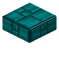
诡异下界砖台阶eternalnether:warped_nether_brick_slab · 方块
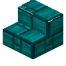
诡异下界砖楼梯eternalnether:warped_nether_brick_stairs · 方块?Warped Nether Brick Vertical Slab
eternalnether:warped_nether_brick_vertical_slab · 方块
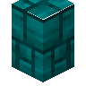
Warped Nether Brick Walleternalnether:warped_nether_brick_wall · 方块
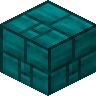
诡异下界砖eternalnether:warped_nether_bricks · 方块
凋灵恼鬼刷怪蛋eternalnether:wex_spawn_egg · 物品
凋灵骷髅马刷怪蛋eternalnether:wither_skeleton_horse_spawn_egg · 物品
凋零骷髅骑士刷怪蛋eternalnether:wither_skeleton_knight_spawn_egg · 物品
 音乐唱片
音乐唱片eternalnether:wither_waltz_music_disc · 物品
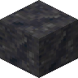
凋零玄武岩eternalnether:withered_basalt · 方块
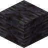
凋零黑石eternalnether:withered_blackstone · 方块
 凋零台阶
凋零台阶eternalnether:withered_blackstone_slab · 方块
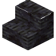
凋零黑石楼梯eternalnether:withered_blackstone_stairs · 方块?Withered Blackstone Vertical Slab
eternalnether:withered_blackstone_vertical_slab · 方块
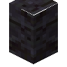
Withered Blackstone Walleternalnether:withered_blackstone_wall · 方块Withered Bone
eternalnether:withered_bone · 物品Withered Bone Block
eternalnether:withered_bone_block · 方块Withered Bone Meal
eternalnether:withered_bone_meal · 物品
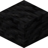
凋零煤炭块eternalnether:withered_coal_block · 方块
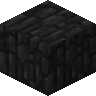
凋零残骸eternalnether:withered_debris · 方块
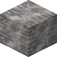
凋零石英块eternalnether:withered_quartz_block · 方块
凋零死士刷怪蛋eternalnether:wraither_spawn_egg · 物品